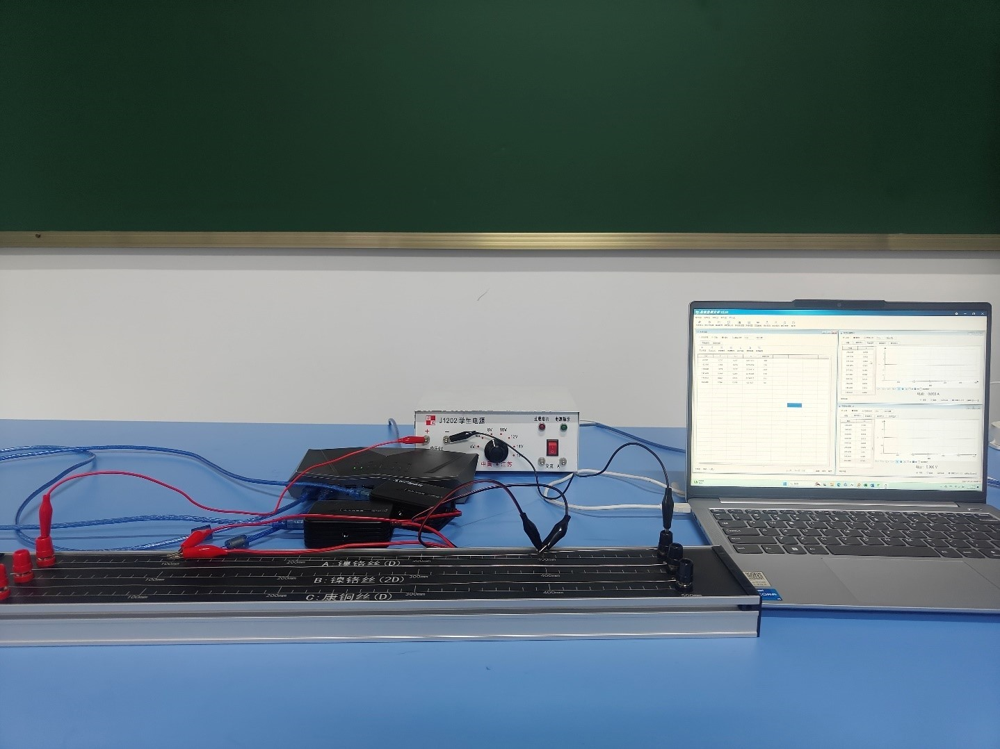
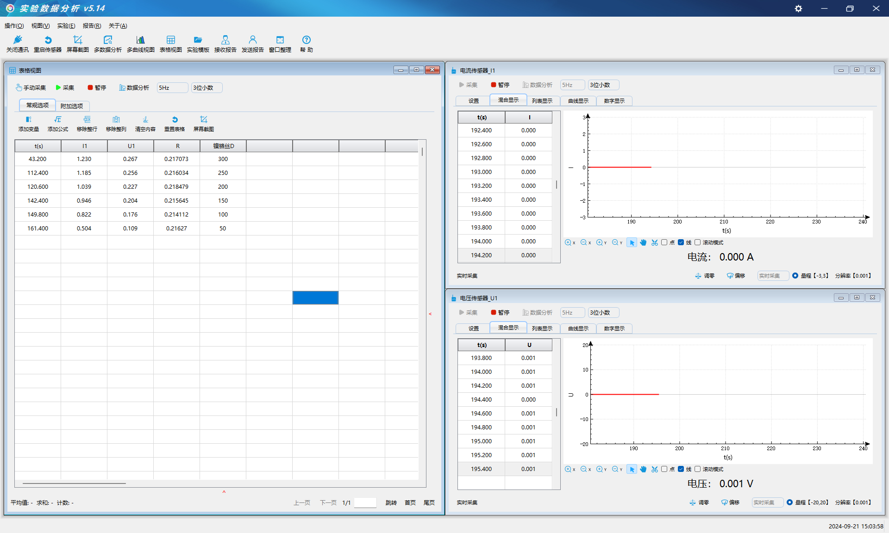

实验三十六 探究金属导体的电阻与材料、横截面积、长度的关系
【实验目的】
探究和验证电阻定律。
【实验原理】
导体的电阻R跟它的长度L、电阻率ρ成正比，跟它的横截面积S成反比，这个规律就叫电阻定律，公式为R=ρL/S 。实验运用控制变量法，当导体长度、电阻率不变时，比较不同横截面积的电阻大小，验证导体电阻与横截面积的关系。同理验证长度、电阻率与导体电阻的关系。
【实验器材】
数据采集器、电流传感器、电压传感器、学生电源、电阻定律实验器等。
【实验装置】

【实验操作步骤】
1：用米尺测量金属丝的长度L和横截面直径d。
2：打开实验数据分析软件，连接好电流传感器和电压传感器和数据采集器。
3：对传感器进行调零，将金属丝接入电路中，点击开始记录，将电流和电压的数值记录到表格。
4：改变接入电路金属丝的长度，重复实验。
5：测试相同长度金属丝在相同电路中测试不同截面直径长度电阻的差异性。

【注意事项】
连接电流传感器时需要注意电路正负方向，请勿徒手触碰金属丝，实验过程中注意用电安全。
【思考与讨论】
从观察电流传感器和电压传感器的变化曲线上和金属丝长度和截面直径变化的关系。